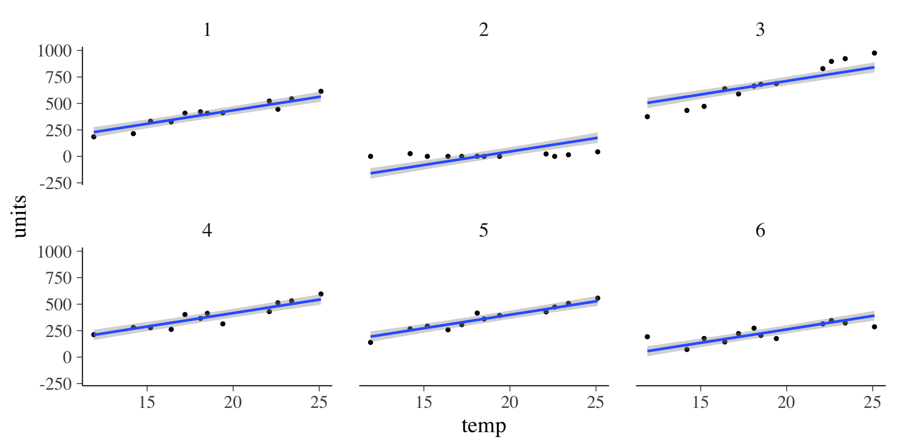

Bayesian Statistics
Introduction with examples in R and brms
Marvin Schmitt
Introduction
> whoami
[1] marvin at location 0xFF35AFEE5801, display_name: "Marvin Schmitt"
> marvin$education
[1] Now: PhD candidate, Cluster of Excellence SimTech, University of Stuttgart
[2] MSc in Data & Computer Science, Heidelberg University
[3] MSc in Psychology, Heidelberg University
> marvin$research
[1] Bayesian inference, deep learning, uncertainty quantification
[4] simulation-based inference, trustworthy ML> marvin$print_image()> whoareyou
Open the course website
Inverse problems

Bayesian inference
\[ p(\theta\,|\,y) = \dfrac{p(y\,|\,\theta)\,p(\theta)}{p(y)} = \dfrac{p(y\,|\,\theta)\,p(\theta)}{\int p(y\,|\,\theta)\,p(\theta)\mathrm{d}\theta} \]
Important terms
- Prior \(p(\theta)\)
- Likelihood \(p(y\,|\,\theta)\)
- Marginal likelihood \(p(y)\)
- Posterior \(p(\theta\,|\,y)\)
For discrete parameters \(\theta\), the integral turns into a sum:
\[ p(\theta\,|\,y) = \dfrac{p(y\,|\,\theta)\,p(\theta)}{p(y)} = \dfrac{p(y\,|\,\theta)\,p(\theta)}{\sum p(y\,|\,\theta)\,p(\theta)} \]
Example: Eye color, setting
Reasoning about eye color
- Among the world population, a proportion \(\theta\) of humans have brown eyes
- Each human either has at least one brown eye (\(y_i=1\)) or not (\(y_i=0\))
- We have data on \(N=20\) humans and observe \(y=11\) with brown eyes
- Simplification: Suppose that \(\theta\) can only take on the values \(.20, .50, .80\)
We assume a Binomial likelihood: \(p(y\,|\,\theta, N) = \binom{n}{y}\,\theta^y\,(1-\theta)^{N-y}\)
Example: Eye color, prior
Reasoning about eye color
- Among the world population, a proportion \(\theta\) of humans have brown eyes
- Each human either has at least one brown eye (\(y_i=1\)) or not (\(y_i=0\))
- We have data on \(N=20\) humans and observe \(y=11\) with brown eyes
- Simplification: Suppose that \(\theta\) can only take on the values \(.20, .50, .80\)
Suppose we have the following prior belief about the rate \(\theta\) of brown-eyed people:
- \(p(\theta = 0.20) = 0.10\)
- \(p(\theta = 0.50) = 0.40\)
- \(p(\theta = 0.80) = 0.50\)
Example: Eye color, posterior (I)
Reasoning about eye color
- Among the world population, a proportion \(\theta\) of humans have brown eyes
- Each human either has at least one brown eye (\(y_i=1\)) or not (\(y_i=0\))
- We have data on \(N=20\) humans and observe \(y=11\) with brown eyes
- Simplification: Suppose that \(\theta\) can only take on the values \(.20, .50, .80\)
We compute the joint distribution \(p(\theta, y)\) as \(p(\theta)\cdot p(y\,|\,\theta)\)
| Prior \(p(\theta)\) | Likelihood \(p(y\,|\,\theta)\) | Joint \(p(\theta, y)\) |
|---|---|---|
| \(p(\theta=0.20)=0.10\) | \(p(y = 11\,|\,\theta=0.20, N=20)=0.0005\) | \(0.00005\) |
| \(p(\theta=0.50)=0.40\) | \(p(y = 11\,|\,\theta=0.50, N=20)=0.1602\) | \(0.06408\) |
| \(p(\theta=0.80)=0.50\) | \(p(y = 11\,|\,\theta=0.80, N=20)=0.0074\) | \(0.00370\) |
Marginal likelihood \(p(y) = \sum_{\theta}p(\theta, y) = 0.00005 + 0.06408 + 0.00370 = 0.06783\)
Example: Eye color, posterior (II)
Reasoning about eye color
- Among the world population, a proportion \(\theta\) of humans have brown eyes
- Each human either has at least one brown eye (\(y_i=1\)) or not (\(y_i=0\))
- We have data on \(N=20\) humans and observe \(y=11\) with brown eyes
- Simplification: Suppose that \(\theta\) can only take on the values \(.20, .50, .80\)
Marginal likelihood \(p(y) = \sum_{\theta}p(\theta, y) = 0.00005 + 0.06408 + 0.00370 = 0.06783\)
We compute the posterior as \(p(\theta\,|\,y)=\dfrac{p(y)\,p(y\,|\,\theta)}{p(y)}\)
| Parameter \(\theta\) | Joint \(p(\theta, y)\) | Posterior \(p(\theta\,|\,y)\) |
|---|---|---|
| \(\theta=0.20\) | \(p(\theta=0.20, y=11) = 0.00005\) | \(p(\theta=0.20\,|\,y=11) = 0.0007\) |
| \(\theta=0.50\) | \(p(\theta=0.50, y=11) = 0.06408\) | \(p(\theta=0.50\,|\,y=11) = 0.9447\) |
| \(\theta=0.80\) | \(p(\theta=0.80, y=11) = 0.00370\) | \(p(\theta=0.80\,|\,y=11) = 0.0545\) |
Example: Eye color, R code
N = 20
y = 11
theta = c(0.20, 0.50, 0.80)
prior = c(0.10, 0.40, 0.50)
likelihood = dbinom(y, N, theta)
joint = prior * likelihood
posterior = joint / sum(joint)
print(cbind(theta, prior, likelihood, posterior)) theta prior likelihood posterior
[1,] 0.2 0.1 0.0004616849 0.0006808377
[2,] 0.5 0.4 0.1601791382 0.9448521445
[3,] 0.8 0.5 0.0073869589 0.0544670178Example: Eye color, fine-grained \(\theta\)
Joint distribution
The joint distribution \(p(y, \theta)\) can be visualized for 1-dimensional data \(y\) and parameters \(\theta\):
Exercise
The Bayesian coin flip
Implement Bayesian updating for a coin flip experiment that tries to find the true probability \(\theta\) of heads.
- What is a suitable likelihood \(p(y\,|\,\theta)\)?
- What is the parameter \(\theta\) of that likelihood?
- How can you encode your prior belief about \(\theta\) in a distribution?
- Possible values of \(\theta\)?
- Areas of high mass?
- Use
Rto sample and visualize some distributions.
- How does the result change if you increase the number of observations
N? - Optional:
- Compute the Maximum Likelihood Estimate (MLE)
- Compare the MLE with mode of the posterior distribution (aka. MAP)
- When do MLE and MAP differ?
- Can you make MLE and MAP equal?
Linear regression modeling
Linear regression models: basics
\(y = \underbrace{a + b_1x_1 + \ldots + b_Kx_K}_{\text{mean}\ \mu} + \varepsilon\quad\text{with}\;\varepsilon\sim\mathcal{N}(0, \sigma)\)
Components of the linear model
- Data \(y\)
- Parameters: \(\theta = (a, b_1, \ldots, b_K, \sigma)\)
- Intercept \(a\)
- Regression weights \(b_1,\ldots,b_K\)
- Error \(\sigma\)
- Posterior distribution: \(p(a, b_1, \ldots, b_K, \sigma\,|\,y)\)

Sampling from the posterior: MCMC
Analytic models are desirable, but the real world is continuous and more complex. Computing the marginal likelihood \(p(y)=\int p(y,\theta)\mathrm{d}\theta\) is usually infeasible.
Solution: Markov-Chain Monte Carlo (MCMC), for our purpose treat it as:
- Define the prior \(p(\theta)\) and likelihood \(p(y\,|\,\theta)\)
- Run MCMC
- ???
- Profit: get samples from the posterior \(p(\theta\,|\,y)\)
The brms package
brms is an R interface to the probabilistic programming language Stan for Bayesian inference. It is designed to be accessible and usable by people who would otherwise use packages like lme4.
Why use brms?
- Generated
Stancode can be accessed - Very flexible: MLM, hurdle models, distributional regression,
- Actively maintained
- Formula syntax based on
lme4 - Integration to post-processing and visualization libraries like
bayesplot
Live footage right now

Fitting a brms model
The brm() function is the core entry point into brms to sample from the posterior distribution:
Visualize MCMC chains
Visualize the posterior draws

Side-by-side: MCMC chains and posterior draws


The density plots show the stationary distributions of the Markov chains.
The posterior is a multidimensional distribution
\[ p(\theta\,|\,y) = p(a, b, \sigma\,|\,y) \]
Inspecting the posterior draws \((a, b)\) shows a pattern:
Model summary
Family: gaussian
Links: mu = identity; sigma = identity
Formula: y ~ x
Data: df (Number of observations: 50)
Draws: 4 chains, each with iter = 4000; warmup = 2000; thin = 1;
total post-warmup draws = 8000
Population-Level Effects:
Estimate Est.Error l-95% CI u-95% CI Rhat Bulk_ESS Tail_ESS
Intercept 13.98 2.30 9.56 18.44 1.00 7761 5773
x -1.38 0.91 -3.16 0.39 1.00 7715 5659
Family Specific Parameters:
Estimate Est.Error l-95% CI u-95% CI Rhat Bulk_ESS Tail_ESS
sigma 5.88 0.60 4.86 7.21 1.00 6751 5261
Draws were sampled using sampling(NUTS). For each parameter, Bulk_ESS
and Tail_ESS are effective sample size measures, and Rhat is the potential
scale reduction factor on split chains (at convergence, Rhat = 1).Visualize modeled expectation
The expectation is the mean \(\mu\) in the linear model (no noise \(\varepsilon\)):
\[y = \underbrace{a + b_1x_1 + \ldots + b_Kx_K}_{\text{mean}\ \mu} + \varepsilon\quad\text{with}\;\varepsilon\sim\mathcal{N}(0, \sigma)\]
Defining a prior in brms
Features of brms priors
- Priors can be combined with the
+operator - The
classargument defines the type of parameter thecoefargument further defines the target parameterclass= 'b'andcoef='x'refers to the regression weight for the variablex
- The distribution is easy to define with many available options (see the Stan reference for all available distributions)
Passing the prior to the brms model
We use the prior argument to set the custom prior:
Exercise
Modeling icecream sales at different temperatures
- Model the
icecream.csvdata with a Bayesian regression model - Choose a likelihood function
- Define a prior distribution
- Visualize the posterior draws as a density plot
- Visualize the modeled expectation \(\mu\) (i.e., regression line with uncertainty)
Posterior predictive distribution: Theory
Distribution of model-implied data \(\tilde{y}\) conditional on the existing data \(y\):
\[ p(\tilde{y}\,|\,y) = \int p(\tilde{y}\,|\,y,\theta)\,p(\theta\,|\,y)\mathrm{d}\theta \]
Tip
The posterior predictive distribution lives on the data domain but incorporates the uncertainty from the Bayesian update!
Posterior predictive distribution: Practice
Imagine the posterior predictive distribution as a multi-step sampling process:
- Sample \(\hat{\theta}^{(s)}\) from the posterior distribution
- Plug the sample \(\hat{\theta}^{(s)}\) into the likelihood
- Result: one draw from the posterior predictive distribution
Pseudocode
for s in [1...S]:
theta_sample = posterior_samples[s]
y_hat = likelihood_function(theta_sample)For an imaginary Gaussian model
for s in [1...S]:
mu_sample = posterior_samples[s, "mu"]
sigma_sample = posterior_samples[s, "sigma"]
y_hat = rnorm(N, mu_sample, sigma_sample)Intuitive phrasing
posterior predictive = mean prediction + noise
Posterior predictive distribution: Expectations I
Posterior predictive distribution: Expectations II
Posterior predictive distribution: Data domain
posterior_draws = posterior_samples(lm_prior)
for (i in 1:3){
plot(df$x, df$y, pch=16, cex=1.5, col="gray", ylim=c(0, 60))
mu = posterior_draws[i, "b_Intercept"] + posterior_draws[i, "b_x"] * df$x
lines(df$x, mu, col="blue", lwd=4)
sigma = posterior_draws[i, "sigma"]
y_sim = rnorm(50, mean=mu, sd = sigma)
points(df$x, y_sim, col="orange", pch=16, cex=1.5)
}

Posterior predictive distribution: Data domain (brms)
Comparing models with predictive fit: LOO-CV
Leave-One-Out Cross-Validation (LOO-CV) computes the expected fit on unseen data:
- Split the data \(y\) into test set (one observation) and training set (rest of \(y\))
- Fit posterior on training set
- Compute predictive fit on test observation
- Repeat 13 on many different splits
Exercise
Comparing ice cream models
- Plot the posterior predictive distribution for the icecream model
- Define two more ice cream models, for example with
- another prior distribution
- another likelihood
- Compare the models via LOO-CV
- Interpret the results. What are your conclusions?
Bayesian multilevel modeling
Ice cream sales at different locations: simple model
Simple linear model in brms
Model summary
Family: gaussian
Links: mu = identity; sigma = identity
Formula: units ~ temp
Data: icecream2 (Number of observations: 72)
Draws: 4 chains, each with iter = 2000; warmup = 1000; thin = 1;
total post-warmup draws = 4000
Population-Level Effects:
Estimate Est.Error l-95% CI u-95% CI Rhat Bulk_ESS Tail_ESS
Intercept -132.56 130.02 -392.02 115.60 1.00 3673 2773
temp 25.54 6.78 12.43 39.02 1.00 3680 2631
Family Specific Parameters:
Estimate Est.Error l-95% CI u-95% CI Rhat Bulk_ESS Tail_ESS
sigma 216.89 18.16 184.84 256.15 1.00 3649 2729
Draws were sampled using sampling(NUTS). For each parameter, Bulk_ESS
and Tail_ESS are effective sample size measures, and Rhat is the potential
scale reduction factor on split chains (at convergence, Rhat = 1).Visualize mean predictions

Visualize data predictions

Respecting the multilevel structure
Multilevel model in brms
The adapt_delta parameter
Increasing adapt_delta slows down the sampler but creates fewer divergent transitions.
Rule of thumb: increase adapt_delta if you get warnings about divergent transitions.
Model summary
Family: gaussian
Links: mu = identity; sigma = identity
Formula: units ~ temp + (1 | location)
Data: icecream2 (Number of observations: 72)
Draws: 4 chains, each with iter = 2000; warmup = 1000; thin = 1;
total post-warmup draws = 4000
Group-Level Effects:
~location (Number of levels: 6)
Estimate Est.Error l-95% CI u-95% CI Rhat Bulk_ESS Tail_ESS
sd(Intercept) 238.18 76.96 134.96 430.75 1.00 770 1261
Population-Level Effects:
Estimate Est.Error l-95% CI u-95% CI Rhat Bulk_ESS Tail_ESS
Intercept -131.03 95.63 -323.54 54.29 1.00 918 1027
temp 25.45 2.13 21.25 29.56 1.00 2403 2150
Family Specific Parameters:
Estimate Est.Error l-95% CI u-95% CI Rhat Bulk_ESS Tail_ESS
sigma 69.35 6.29 58.43 82.24 1.00 2057 2228
Draws were sampled using sampling(NUTS). For each parameter, Bulk_ESS
and Tail_ESS are effective sample size measures, and Rhat is the potential
scale reduction factor on split chains (at convergence, Rhat = 1).Visualize the posterior
Visualize mean predictions
Visualize data predictions
Comparing the simple and multilevel model
Exercise
Multilevel model for icecream sales
- Define more Bayesian models, and save each model in a separate variable for later.
icecream_mlm_2: Change the likelihood to aPoissondistributionicecream_mlm_3: Allow for varying slopes at each location but a fixed intercepticecream_mlm_4: Allow for varying slopes and varying intercept at each location
- Compare the models via LOO-CV
- You need
loo()andloo_compare()
- You need
- Interpret the results. What are your conclusions?
Modeling group comparisons
IMDB movies

Source of idea, data, and visualization: Andrew Heiss (Link)
Group means as regression models
Formulating a group mean comparison as a regression:
Model summary: rating ~ 0 + genre
Family: gaussian
Links: mu = identity; sigma = identity
Formula: rating ~ 0 + genre
Data: movies (Number of observations: 400)
Draws: 4 chains, each with iter = 2000; warmup = 1000; thin = 1;
total post-warmup draws = 4000
Population-Level Effects:
Estimate Est.Error l-95% CI u-95% CI Rhat Bulk_ESS Tail_ESS
genreAction 5.07 0.10 4.87 5.27 1.00 4402 2971
genreComedy 5.86 0.11 5.65 6.07 1.00 4157 3017
Family Specific Parameters:
Estimate Est.Error l-95% CI u-95% CI Rhat Bulk_ESS Tail_ESS
sigma 1.48 0.05 1.38 1.58 1.00 3573 2900
Draws were sampled using sampling(NUTS). For each parameter, Bulk_ESS
and Tail_ESS are effective sample size measures, and Rhat is the potential
scale reduction factor on split chains (at convergence, Rhat = 1).Modeling distributional parameters
We can also estimate the standard deviation \(\sigma\) of each group in addition to the mean:
Model summary: rating ~ 0 + genre, sigma ~ 0 + genre
Family: gaussian
Links: mu = identity; sigma = log
Formula: rating ~ 0 + genre
sigma ~ 0 + genre
Data: movies (Number of observations: 400)
Draws: 4 chains, each with iter = 2000; warmup = 1000; thin = 1;
total post-warmup draws = 4000
Population-Level Effects:
Estimate Est.Error l-95% CI u-95% CI Rhat Bulk_ESS Tail_ESS
genreAction 5.07 0.11 4.85 5.28 1.00 4444 3211
genreComedy 5.86 0.10 5.67 6.04 1.00 4449 3256
sigma_genreAction 0.45 0.05 0.36 0.55 1.00 4422 2841
sigma_genreComedy 0.33 0.05 0.23 0.43 1.00 4300 3140
Draws were sampled using sampling(NUTS). For each parameter, Bulk_ESS
and Tail_ESS are effective sample size measures, and Rhat is the potential
scale reduction factor on split chains (at convergence, Rhat = 1).Retrieving the standard deviations
For mathy reasons (Link), the sigma draws are on a log scale, so we need to exponentiate them back to the data scale:

Computing custom posterior quantities
We can treat the posterior samples like a data frame and compute arbitrary quantities for each draw.
Region of practical equivalence (ROPE)
Define a region that is practically equivalent to a point value.
Example: Coin flip
Coin flip with Binomial parameter \(\theta\): ROPE = \([0.45, 0.55]\) for a fair coin
Other Examples
- Correlation coefficient \(r\): \([-0.10, 0.10]\)
- Odds ratio \(OR\): \([0.95, 1.05]\)
Exercise
IMDB movie ratings: Effect size and ROPE
- Compute the posterior distribution of Cohens \(d\) for the movie genre comparison
- Define a sensible region of practical equivalence (ROPE) for Cohens \(d\)
- Choose a sensible credible interval for reporting the posterior distribution of Cohens \(d\)
- Visualize the ROPE and the posterior credible interval of \(d\)
- Interpret the result
- Optional: Change the model family to Student-t.
- Find out which additional parameter this will model, add a prior for it.
- Should we model the data with a Student-\(t\) family?
Use the definition \(d = \dfrac{\mu_1 - \mu_2}{\sqrt{\frac{1}{2}(\sigma_1^2 + \sigma_2^2)}}\)
Attention: Variance \(\leftrightarrow\) SD
Remember to square the sigma draws for the computation of Cohens \(d\)!
Outlook
Using Bayesian inference for your own projects
3 questions about your own research projects
- Which concrete statistical models am I currently using?
- How might these models benefit from Bayesian inference?
- What knowledge am I missing to use a Bayesian approach?
Work through these guiding questions. Let your answers be as specific as possible. If applicable, you can also sketch out concrete next steps or some equations.
- Think (5min)
- Pair (15min)
- Share
Reading tips
- Richard McElreath (2020). Statistical Rethinking: A Bayesian course with examples in R and Stan. CRC Press.
- The best book to start with Bayesian inference. Highly recommended!
- Great free lectures on YouTube (Link)
- Andrew Gelman, John Carlin, Has Stern, David Dunson, Aki Vehtari, & Donald Rubin (2021). Bayesian Data Analysis. Volume 3.
- Much more technical, probably more of a reference
- Accompanying online course by Aki Vehtari (Link)
Contact
Marvin Schmitt
Credits
Special thanks to Paul Brkner for providing me with workshop material on Bayesian modeling with brms. The brms introduction is heavily inspired by Pauls material.

Bayesian statistics workshop | Marvin Schmitt | marvinschmitt.github.io/bayes-workshop